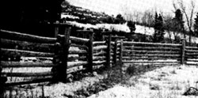

[1] Two rows of posts are set , each pair in a single three-foot-deep hole. Temporary barbed wire is in place to keep the livestock at home while the final fence construction is in progress. [2] When you reach a 900 corner, dig postholes at a 450 angle and leave an eight-inch space between the posts to accommodate horizontal poles coming from two different directions. ""Cap"" the posts to keep them from spreading apart. [3] Pegs - aside from from adding an old-time look to your enclosure - will help to keep the crosspieces in place. [4] A slide bolt will hold the gate closed and a nice finishing touch to your totally natural fence. [5] The gate swings on a special ""hinge post"", which is pointed like a pencil at both ends, and fits - at its base - into a dimple in a short stump buried in the ground adjacent to the last fencepost. [6] The author demonstrates the proper technique for attaching the trimmed ends of horizontal poles to a pre-drilled single gatepost.